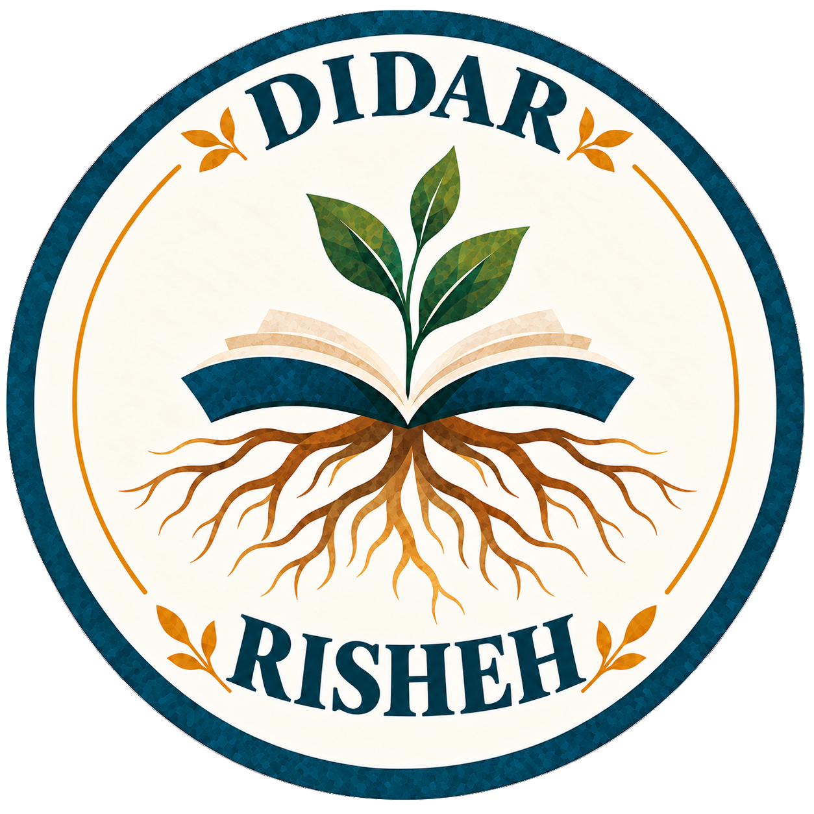
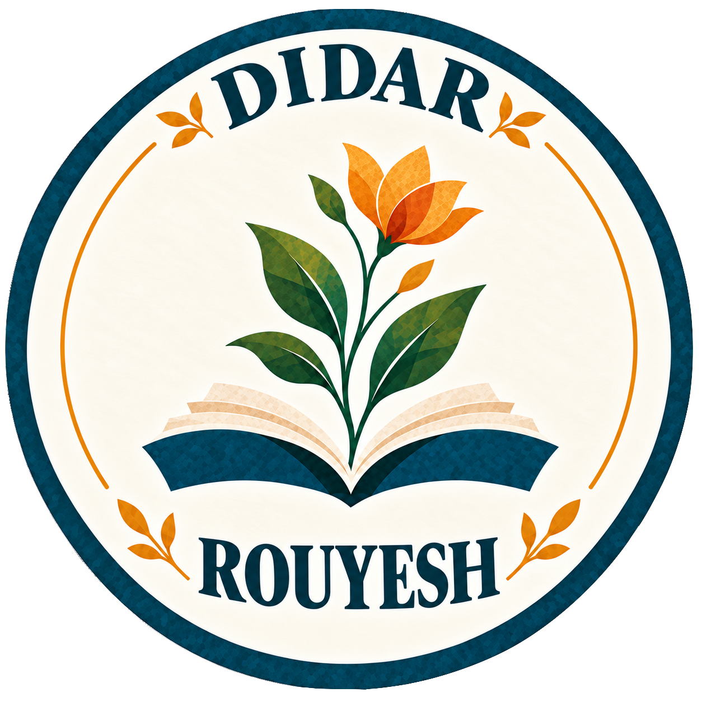
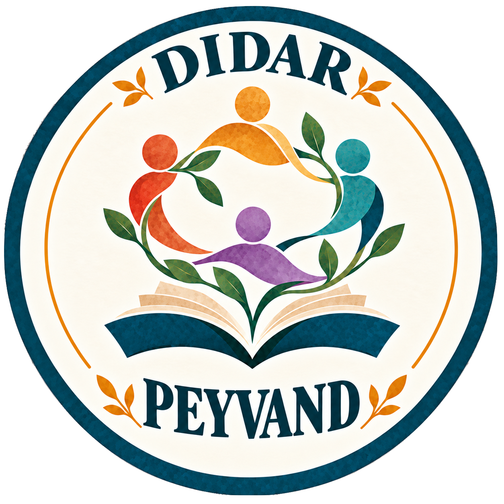

راهنمایی و ارجاع
کمک به افراد برای شناخت گزینههای موجود و ارتباط با منابع مناسب اجتماعی، اداری، آموزشی، درمانی، شغلی، حقوقی یا سایر خدمات تخصصی.
مونترآل · کبک
دیدار به افراد کمک میکند گزینههای پیش روی خود را بهتر بشناسند، به منابع مناسب متصل شوند، در مسیرهای ناآشنا و پیچیده بهتر راه خود را پیدا کنند و ارتباطهای معنادارتری در جامعه بسازند. فعالیتهای ما همچنین شامل برنامههای فرهنگی، آموزشی و بینفرهنگی است.
درباره دیدار
دیدار برنامههایی را توسعه میدهد که استقلال، مشارکت، یادگیری، ارتباط اجتماعی و حضور فعال در جامعه را تقویت میکنند. ما به افراد کمک میکنیم منابع مناسب را پیدا کنند، گامهای بعدی را مشخص کنند، با سازمانها و افراد حرفهای مرتبط در تماس قرار بگیرند و در صورت نیاز از همراهی عملی برخوردار شوند.
دیدار همچنین فضاهایی برای انتقال فرهنگی، آموزش، تبادل بیننسلی، هنر، مشارکت اجتماعی و گفتوگوی بینفرهنگی ایجاد میکند.
راهنمایی، ارجاع و همراهی اجتماعی
نقش ما این است که به افراد کمک کنیم بدانند برای هر موضوع به کجا مراجعه کنند، منابع مناسب را پیدا کنند، با نهادها و افراد مرتبط ارتباط بگیرند و در صورت نیاز از همراهی عملی برخوردار شوند.
کمک به افراد برای شناخت گزینههای موجود و ارتباط با منابع مناسب اجتماعی، اداری، آموزشی، درمانی، شغلی، حقوقی یا سایر خدمات تخصصی.
همراهی افراد در موقعیتهایی که برای مراجعه به قرارها، ارتباط با نهادها، انجام امور اداری یا شناخت یک سیستم ناآشنا به حمایت عملی نیاز دارند.
کمک به مرتبسازی اطلاعات، آمادهکردن پرسشها، مستندسازی یک وضعیت، نوشتن مکاتبات روشن و درک بهتر روندهای اداری و نهادی.
ایجاد ارتباط میان افراد و همتایان، داوطلبان، منتورها، متخصصان، سازمانها و شبکههای اجتماعی، همراه با ایجاد فرصت برای مشارکت و حمایت متقابل.
نقش ما: دیدار خدمات راهنمایی، ارجاع و همراهی اجتماعی ارائه میدهد. دیدار مشاوره تخصصی مهاجرتی، حقوقی، پزشکی، روانشناختی یا مددکاری اجتماعی ارائه نمیکند و جایگزین خدمات متخصصان دارای مجوز یا حرفههای نظاممند نیست. هر جا به تخصص حرفهای نیاز باشد، ما به افراد کمک میکنیم منابع واجد صلاحیت را پیدا کرده و با آنها ارتباط بگیرند.
با چه کسانی کار میکنیم
دیدار با افرادی کار میکند که میتوانند از ارتباط اجتماعی قویتر، راهنمایی عملی، دسترسی بهتر به منابع یا فرصتهای بیشتر برای مشارکت و نقشآفرینی در جامعه بهرهمند شوند.
برنامهها و پروژهها
یک کتابخانه مستقل اجتماعی با چند دهه سابقه در فعالیتهای ادبی و فرهنگی فارسی. دیدار میتواند با کتابخانه نیما در زمینه ادبیات، مستندسازی، حافظه فرهنگی، دسترسی به کتابها و مجموعهها، دیجیتالسازی، نمایشگاهها و فعالیتهای بیننسلی همکاری کند.
برنامهای برای حمایت اجتماعی از سالمندان که شامل کمک در امور دیجیتال، راهنمایی برای دسترسی به خدمات و همراهی عملی در برخی امور اداری، اجتماعی و مراجعههای پزشکی است.
کارگاهها، گفتوگوهای عمومی و رویدادهای اجتماعی درباره موضوعاتی مانند مشارکت، تنوع، رضایت، جنسیت، احساس تعلق، تجربه مهاجرت، حقوق و درک بینفرهنگی.
مستندسازی مسائل تکرارشونده جامعه، شناسایی موانع و ایجاد داده و شواهدی که بتواند به بهبود خدمات، همکاریها و پاسخ نهادها کمک کند.
مدل دیدار
ریشه حفظ میکند و انتقال میدهد. رویش فرصت یادگیری و آفرینش ایجاد میکند. پیوند افراد، منابع و جامعهها را به هم نزدیک میکند.

RISHEHمیراث · حافظه · زبان · نسلها
پیوند دادن نسلها تا دانش، داستانها، زبان و حافظه فرهنگی بتوانند به اشتراک گذاشته شوند، مستند شوند و به نسلهای بعد منتقل شوند.

ROUYESHآموزش · هنر · مهارت · خلاقیت
ایجاد فرصت برای یادگیری، آفرینش، کشف و رشد در سنین مختلف و در مراحل گوناگون زندگی.

PEYVANDجامعه · مشارکت · تبادل · تعلق
پیوند دادن افراد با یکدیگر، با خدمات و فرصتها و با جامعه گستردهتر کبک.
تماس
برای راهنمایی و همراهی اجتماعی، همکاری داوطلبانه، مشارکت سازمانی، فعالیتهای فرهنگی، رویدادها یا پروژههای مشترک با ما تماس بگیرید.